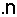
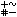
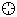
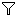
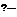
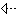
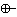

| JExplorer plugin | |
|
©2003 Amedeo Farello - afarello@libero.it |
Version 0.3.1 (2003.07.27) |
JExplorer is a Java code browser. Starting from a ProjectViewer plugin project, it can analyze the Java source files in it and build a "model", which is then used to navigate the code.
JExplorer features are:
Now, for those less in a hurry...
The items that constitute a model are Java classes, interfaces, fields, constructors and methods. A model is built by parsing each source file in a project and extracting information about every defined item.
There can be only a single model for each ProjectViewer project. The project is used to determine which files must be taken into account to build the model and to store model properties.
Each model has its own current selection and set of properties. Many JExplorer windows can refer to the same model: this means they will share the same selection and options.
Models, unlike projects, are not persistent. When the jEdit session is terminated, models are lost. Model properties are instead persistent and remembered between sessions.
When a source file belonging to a model changes after the model is built for the first time, the model may become obsolete. JExplorer offers three options to deal with this:
Please see the The models dialog and the Global options sections for more information.
If a source file cannot be succesfully parsed due to some error, a corresponding error entry in the ErrorList plugin window is generated.
Models are created and destroyed from the Models dialog. The dialog shows all existing ProjectViewer projects, with bold type indicating that a project is already loaded. To create a model for a project, select its row in the list and click the "Create" button. To remove it, click the "Create" button.
Creation takes place in background and may take a few seconds or much more, depending on the project complexity. When a model is available, the corresponding row shows a "M" and two icons.
The first icon indicates the update policy for the model and can appear as follows:
| the model is rebuilt when a jEdit buffer changes (this is the default) | |
| the model is rebuilt when a jEdit buffer is saved | |
| the model is never rebuilt |
To change this setting, check the corresponding option in the "Properties" dialog that appears when double clicking on the model row or pushing the "Properties..." button. This dialog also contains an "Update" button that immediately updates the model as needed.
The second icon indicates model status and can appear as follows:
| the model has been succesfully built and is ready to use | |
| the model is being parsed | |
| the model could not be parsed succesfully
(Look for errors in the Error List plugin window) |
|
| the model is not kept up-to-date |
The "Libraries..." button of the "Models" dialog opens the "Libraries" dialog for the selected model. A library is a .jar or .zip file containing Java .class files. JExplorer uses libraries to resolve simple type names to fully qualified names. Each model can have an unlimited set of libraries and these can be added or removed with the corresponding buttons in the dialog.
The "Package Colors..." button of the "Models" dialog opens the "Package Colors..." dialog for the selected model. A package-color definition is used to draw items belonging to a package in the specified color, to better distinguish them in JExplorer windows. Each model can have an unlimited set of package-color definitions and these can be added, removed or edited with the corresponding buttons in the dialog.
JExplorer uses two types of dockable windows, Index and Graph. You may want to have them docked, respectively to the left side and to the bottom side. Other floating instances of both types can be opened using Plugins>JExplorer>Index (New Floating Instance) or Plugins>JExplorer>Graph (New Floating Instance).
This window is divided in two parts by a movable divider. You can completely hide one part or the other using the little arrows on the divider.
The upper portion, the global index, shows an alphabetically sorted list of all known items (classes, interfaces and members), while the lower portion, the members panel, shows the members belonging to the currently selected class or interface. Each portion has its own toolbar, while there is a common toolbar at the top.
The common toolbar contains the following controls:
| Name | Function | |||||||||
| Model selector | Use this combo box to select a reference model between those available. | |||||||||
| Model status | The meaning of this icon is the same described here. | |||||||||
| Go back to previous item | Selects the last visited item. | |||||||||
| Show previous items | Opens a history popup menu showing the last selected items. | |||||||||
| Go forward to next item | Selects the next visited item. | |||||||||
| Show next items | Opens a history popup menu showing the next selected items. | |||||||||
|  | Use local names | When this option is enabled, items are represented with their local
name (e.g. Vector), otherwise their fully qualified name is
used, (e.g. java.util.Vector). |
||||||||
|  | Show UML symbols | When this option is enabled, items declared static
are underlined and a symbol indicates items access specification
as follows:
|
||||||||
| Show deprecated | When this option is enabled, a red cross marks deprecated items. |
Within the global index, items are represented as follows:
| Item | Textual representation | |
| class | name | |
| nested class | name | |
| interface | name | |
| nested interface | name | |
| field | name [declaring element] | |
| constructor | name(parameters-list) [declaring element] | |
| method | name(parameters-list) [declaring element] |
The global index toolbar has the following options:
| Name | Function | |
| Show classes | Enables visualization of classes. | |
| Show interfaces | Enables visualization of interfaces. | |
| Show nested elements | Enables visualization of nested classes and inerfaces. | |
| Show fields | Enables visualization of fields. | |
| Show constructors | Enables visualization of constructors. | |
| Show methods | Enables visualization of methods. | |
| Show package colors | When this option is enabled, a coloured rectangle representing the package is inserted between the item's symbol and name. | |
| Show public items | Enables visualization of "public" items. | |
| Show protected items | Enables visualization of "protected" items. | |
| Show private items | Enables visualization of "private" items. | |
| Show package protected items | Enables visualization of "package protected" items. | |
| Search field | Typing something in this text field automatically positions the global index upon the first item that matches the input text. |
Within the members panel, items are represented as follows:
| Item | Textual representation | ||||||||||
| class | name | ||||||||||
| nested class | name | ||||||||||
| interface | name | ||||||||||
| nested interface | name | ||||||||||
| field | name : type
|
||||||||||
| constructor | name(parameters-list)
|
||||||||||
| method | name(parameters-list) : return type
|
The members panel toolbar has the following options:
| Name | Function | |
| Show nested elements | Enables visualization of nested classes and inerfaces. | |
| Show fields | Enables visualization of fields. | |
| Show constructors | Enables visualization of constructors. | |
| Show methods | Enables visualization of methods. | |
| Show public members | Enables visualization of "public" members. | |
| Show protected members | Enables visualization of "protected" members. | |
| Show private members | Enables visualization of "private" members. | |
| Show package protected members | Enables visualization of "package protected" members. |
This window shows relationships between classes and interfaces graphically.
Its toolbar contains the following controls:
| Name | Function | |||||||||
| Model selector | Use this combo box to select a reference model between those available. | |||||||||
| Model status | The meaning of this icon is the same described here. | |||||||||
| Go back to previous item | Selects the last visited item. | |||||||||
| Show previous items | Opens a history popup menu showing the last selected items. | |||||||||
| Go forward to next item | Selects the next visited item. | |||||||||
| Show next items | Opens a history popup menu showing the next selected items. | |||||||||
| Use local names | When this option is enabled, items are represented with their local
name (e.g. Vector), otherwise their fully qualified name is
used, (e.g. java.util.Vector). |
|||||||||
| Show UML symbols | When this option is enabled, items declared static
are underlined and a symbol indicates items access specification
as follows:
|
|||||||||
| Show classes | Enables visualization of classes. | |||||||||
| Show interfaces | Enables visualization of interfaces. | |||||||||
| Show nested elements | Enables visualization of nested classes and inerfaces. | |||||||||
| Layout selector | Use this combo box to choose a layout for classes and interfaces. "By Derivation" groups objects according to their derivation relationships, i.e. puts subclasses near to their superclasses. "By Implementation" groups objects according to the derivation relationships amongst interfaces and the implementation relationships between interfaces and classes, i.e. puts subinterfaces near to their superinterfaces and classes near to the interfaces they implement. "By Nesting" groups objects according to their nesting relationships, i.e. puts nested elements near to their enclosing class or interface. | |||||||||
|  | Centre diagram upon selected element | Automatically centres the diagram upon the selected class or interface. | ||||||||
|  | Show only selected element relatives | If a selection exists, hides all the classes and interfaces that do not conform to the requisites chosen with the Relatives selector. | ||||||||
| Relatives selector | Use this combo box to choose which relatives must be shown for the selected class or interface. For a class, Ancestors shows all superclasses and implemented interfaces while Descendants shows all subclasses. For an interface, Ancestors shows all superinterfaces, while Descendants shows all subinterfaces and implementors. All is the sum of the Ancestors and Descendants options. The selector is only available when the Show only selected element relatives is active and there is a selection. | |||||||||
|  | Show only layout-relevant relationships | This option affects the visibility of the lines representing the relationships between classes and interfaces. If the current layout is By Derivation, only the derivation and implementation connections are shown. If the current layout is By Implementation, only the implementation connections are shown. If the current layout is By Nesting, only the nesting connections are shown. | ||||||||
| Show derivation relationships | Shows or hides the lines representing the derivation relationships between classes or interfaces. If the Show only layout-relevant relationships option is enabled, this option in not available. | |||||||||
|  | Show implementation relationships | Shows or hides the lines representing the implementation relationships between classes and interfaces. If the Show only layout-relevant relationships option is enabled, this option in not available. | ||||||||
|  | Show nesting relationships | Shows or hides the lines representing the nesting relationships between classes and interfaces. If the Show only layout-relevant relationships option is enabled, this option in not available. | ||||||||
| Show package colors | When this option is enabled, the background of classes and interfaces is coloured according to the Package-color definitions. |
The effect of selecting an item in the Index or in the Graph window is to open the file containing the item in a new jEdit buffer (or to just make the buffer current if the file is already open) and jump to the item definition, which gets selected.
It is also possible to go back up to an item from code, using the Plugins>JExplorer>Select Item at Cursor and the Plugins>JExplorer>Select Item at Cursor (pos. source) commands. Both versions determine the item from the current cursor position. The second version is completely equivalent to selecting an item into one of the JExplorer windows, while the first leaves the current buffer selection and caret position unchanged.
Recognition of the "assert" keyword introduced by Java 1.4 cannot be disabled, so pre-1.4 code that legally uses it cannot be parsed without errors, e.g. the java.awt package.
Currently, the ProjectViewer plugin does not send events about project renaming. Therefore this situation cannot correctly be handled by JExplorer.